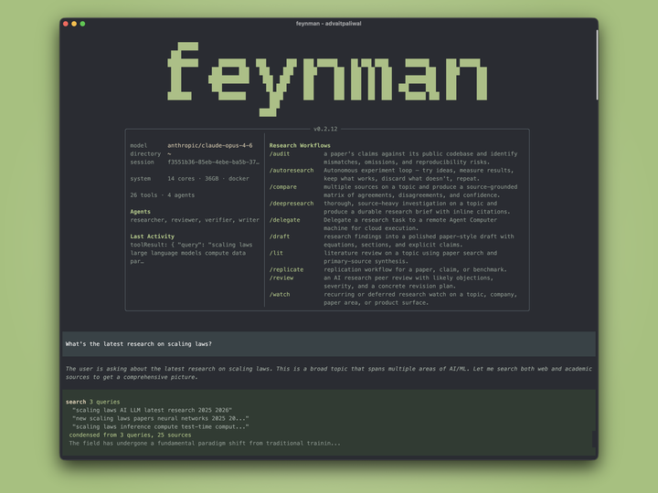

Feynman：把研究流程打包成
可安装的研究工作台
Feynman 不是单个命令，而是一套面向研究任务的工作台：既有独立终端应用，也有可单独安装的 skills-only 路径。它把文献综述、来源比对、同行评审、实验复现、训练 recipe、持续 watch 这些研究动作，统一成可复用的命令与技能包。
`feynman "what do we know about scaling laws"`
paper / web / code / notes / outputs 协同查证
brief, lit, audit, review, recipe, replicate
artifact + skills + prompts + logs
双入口：整机应用 / 仅技能包
完整应用
下载独立 bundle，内置自己的 Node runtime 和环境管理。适合直接跑研究任务、会话、输出与本地模型配置。
Skills only
只装技能树，不装 terminal app。支持 Codex / Repo / OpenCode 三种投放位，适合把研究能力注入现有 agent。
你输入什么，系统怎么接住
多代理并行研究 + 证据汇总，适合深挖一个主题。
文献综述式输出：共识、分歧、开放问题、引用链。
论文 vs 代码审计、模拟同行评审、实验复现与修正计划。
训练 recipe、主题对比、论文风草稿，把研究结果变成可执行方案。
持续监控主题，查看所有研究工件与历史输出。
`feynman`, `feynman deepresearch`, `feynman lit`, `feynman audit`。
20 个技能，13 个 prompts，按研究任务分层
deep-research、literature-review、source-comparison、watch、session-search。
paper-writing、paper-code-audit、peer-review、replication、autoresearch。
draft、summarize、compare、recipe、jobs，生成可直接交付的研究文本。
modal-compute、runpod-compute、docker、preview，把研究跑到可执行的基础设施上。
本地模型与环境接入，不只是一层 CLI
| 维度 | 事实 | 意义 |
|---|---|---|
| 模型接入 | LM Studio / LiteLLM Proxy / Ollama / vLLM | 能接本地或自建 OpenAI-compatible 端点。 |
| 应用形态 | standalone bundle + 自带 Node runtime | 安装后就是一个完整研究工作台，而不是单脚本。 |
| 技能投放 | Codex / Repo / OpenCode / current repo-local | 研究能力可以注入现有 agent 环境。 |
| 仓库资产 | AGENTS.md / skills-lock.json / prompts / website / tests | 说明它是“流程包”，不是单纯的工具库。 |
这份仓库的核心不是“研究助手”，而是“研究流程系统”
不是把答案发散成聊天，而是生成 brief、review、audit、recipe、replicate 这类可用工件。
README 把 app 安装和 skills-only 安装分开，适配不同 agent 运行时。
命令、skills、prompts、outputs 分层明确，适合复用、变体和二次集成。